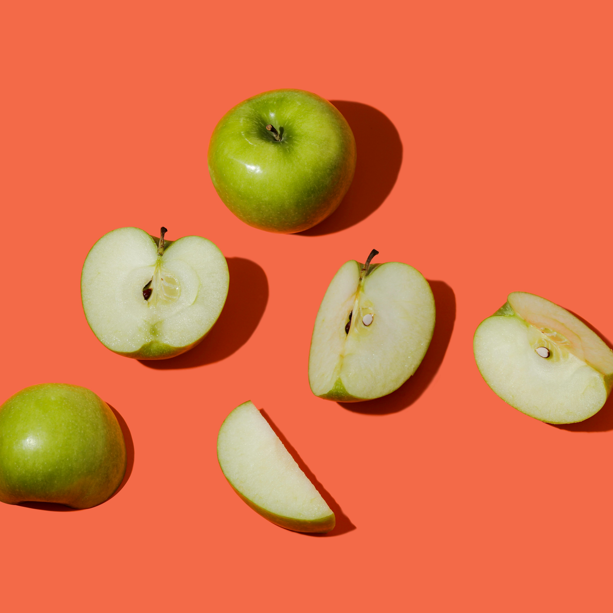
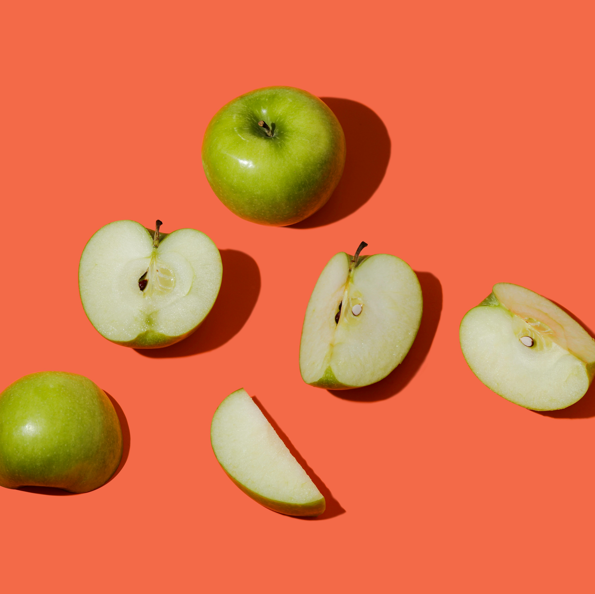

定義
雙峰駱駝（學名：Camelus bactrianus），也叫雙峰駝，是一個大型的偶蹄動物，通常喜歡小群體的生活，
其耐寒、耐旱和對高海拔地區的適應力而於中亞長期馴養作馱畜，例如絲綢之路的駱駝商隊。
雙峰駱駝（學名：Camelus bactrianus），也叫雙峰駝，是一個大型的偶蹄動物，通常喜歡小群體的生活，
其耐寒、耐旱和對高海拔地區的適應力而於中亞長期馴養作馱畜，例如絲綢之路的駱駝商隊。
駱駝多生長在沙漠地區，主要棲息在：
在動物園中會餵食乾草、麥片、胡蘿蔔、地瓜、蘋果、橘子、香蕉等。


 
